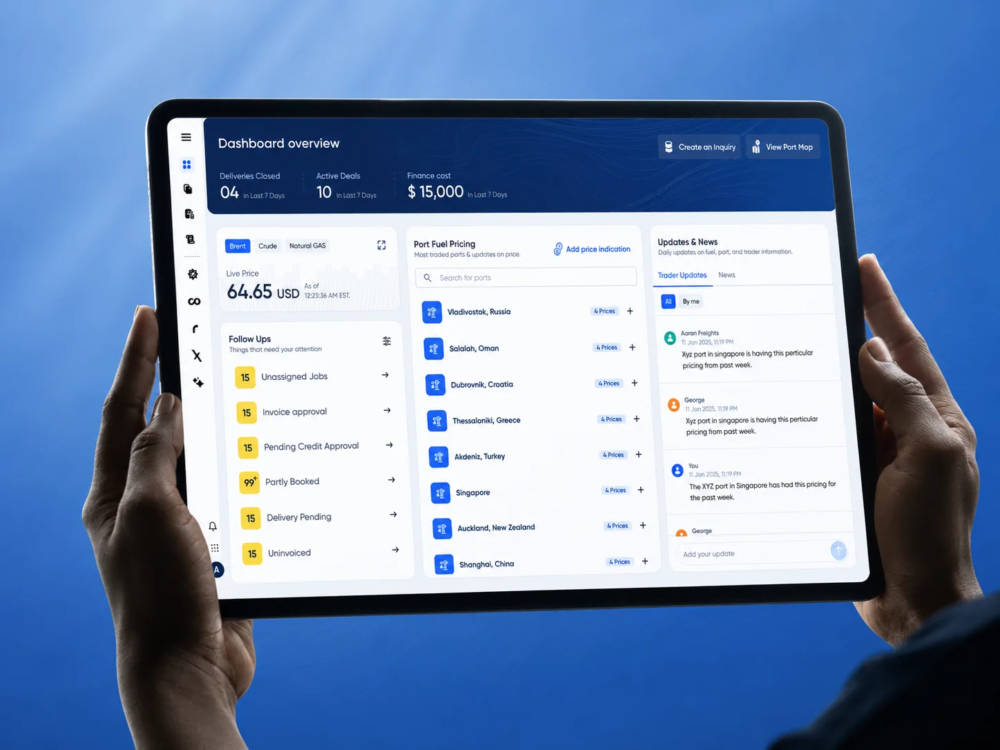

0-to-1 platform · Live in production
GeoStem - Maritime fuel trading intelligence platform
Designed a unified 0-to-1 platform for maritime fuel traders - live commodity pricing, global port bunkering rates, deal pipeline, and a real-time port map in one interface.
